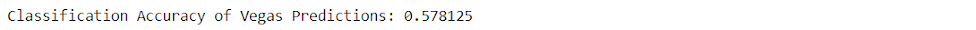
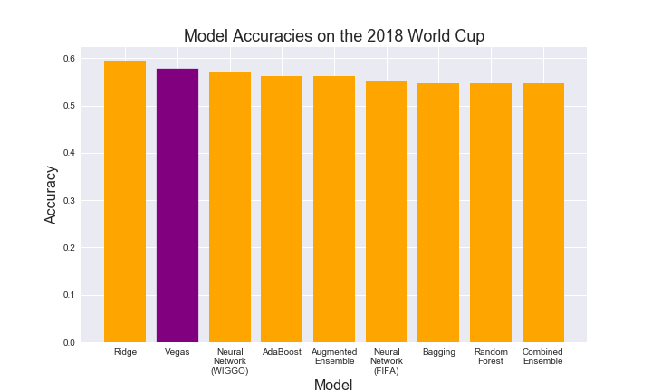
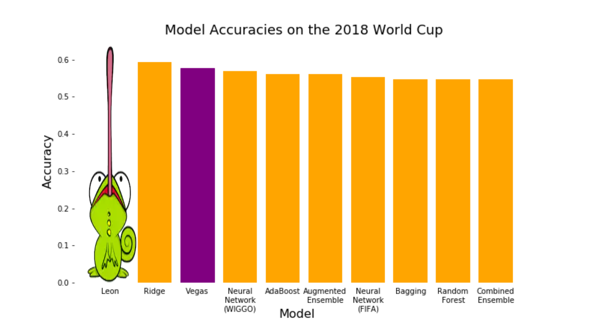

Comparisons and Conclusions
Outline
I. How Do Our Models Stack Up in Vegas?
Vegas betting lines have long set the standard for gambling odds in sports. Their 3-Way betting odds for each game in this year's World Cup provide us with baseline predictions to compare our model with.
We hand-coded a dataset that contains Vegas's predictions for all 64 games in the 2018 World Cup, as well as the outcome of those predictions. Interestingly enough, just like to our models, the Vegas model predicted no ties in this year's World Cup. The Vegas model called about 57.8% of the games correctly, as shown below:
This accuracy is slightly better than that of each of our baseline models, and it is slightly higher than what most of our final models were able to achieve. Our Ridge Regression model was the only one that outperformed it on the 64 games that were played in the 2018 World Cup.
It is important to note that with only 64 games, predicting one more game correctly can increase a model's accuracy by a significant margin. Of the models listed above, the most accurate one only got 3 more games correctly than the worst ones did. Thus, it is still rather uncertain how each of these models would perform in future World Cups.
However, all of our models are at least comparable with the Vegas one. With some fine-tuning, our Neural Network with WIGGO shows signs that it has the potential to beat out Vegas in World Cup prediction.
II. Conclusions
III. L.E.O.N.
Lizard Exploratory Output Network (L.E.O.N)
Another relatively unexplored prediction model is that of chameleon prediction. Using a chameleon named "Leon," predictions for the 2018 FIFA World Cup were generated based on which of two crickets Leon ate first -- the cricket representing the home team or the cricket representing the away team. Using this revolutionary new technique, a test accuracy of 62.5% was achieved for the 2018 World Cup. Comparing the L.E.O.N. model to the other models in the project, it becomes clear that the predictive power of a chameleon far exceeds that of any computer (see plot below).
It is therefore recommendable to focus all modelling efforts into finding the single chameleon who will be able to achieve a test accuracy of 100%.